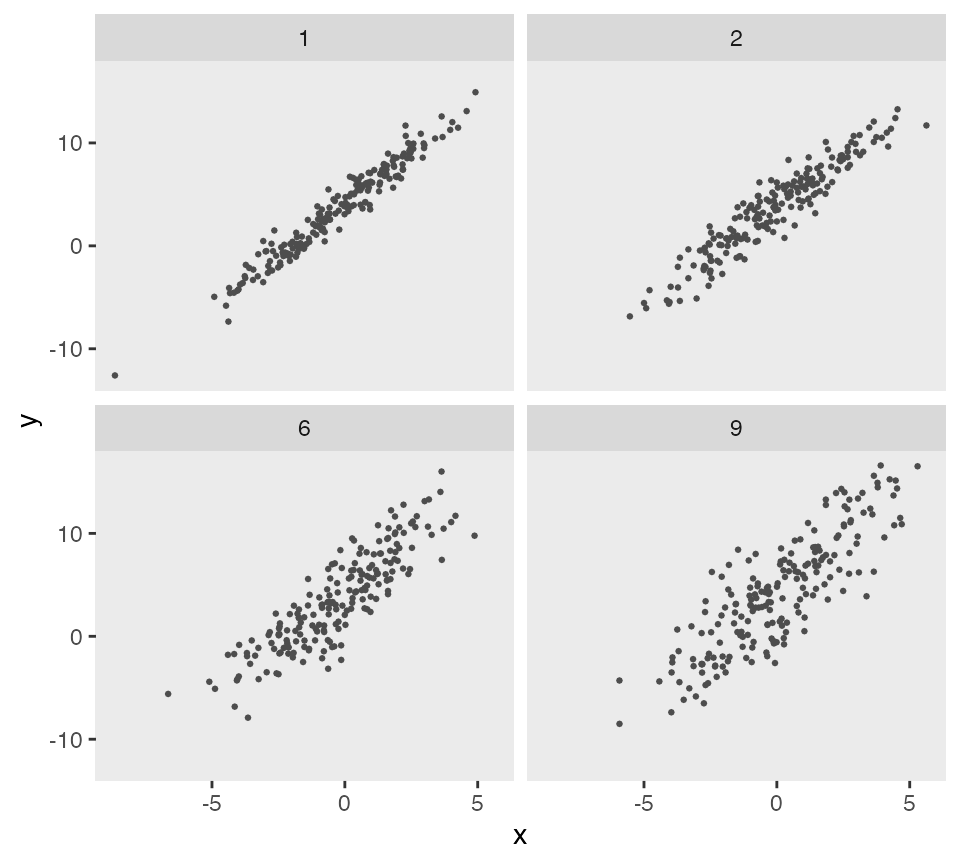
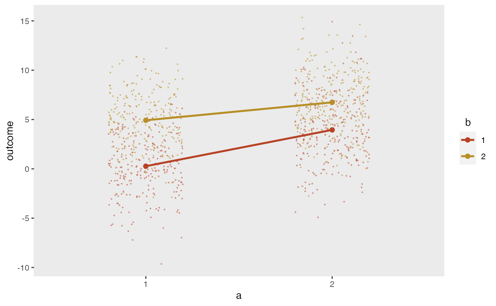

Often, we’d like to explore data generation and modeling under
different scenarios. For example, we might want to understand the
operating characteristics of a model given different variance or other
parametric assumptions. There is functionality built into
simstudy to facilitate this type of dynamic exploration.
First, the functions updateDef and
updateDefAdd essentially allow us to edit lines of existing
data definition tables. Second, there is a built-in mechanism - called
double-dot reference - to access external variables that do not
exist in a defined data set or data definition.
The updateDef function updates a row in a definition
table created by functions defData or defRead.
Analogously, updateDefAdd function updates a row in a
definition table created by functions defDataAdd or
defReadAdd.
The original data set definition includes three variables
x, y, and z, all normally
distributed:
defs <- defData(varname = "x", formula = 0, variance = 3, dist = "normal")
defs <- defData(defs, varname = "y", formula = "2 + 3*x", variance = 1, dist = "normal")
defs <- defData(defs, varname = "z", formula = "4 + 3*x - 2*y", variance = 1, dist = "normal")
defs## varname formula variance dist link
## <char> <char> <num> <char> <char>
## 1: x 0 3 normal identity
## 2: y 2 + 3*x 1 normal identity
## 3: z 4 + 3*x - 2*y 1 normal identityIn the first case, we are changing the relationship of y
with x as well as the variance:
defs <- updateDef(dtDefs = defs, changevar = "y", newformula = "x + 5", newvariance = 2)
defs## varname formula variance dist link
## <char> <char> <char> <char> <char>
## 1: x 0 3 normal identity
## 2: y x + 5 2 normal identity
## 3: z 4 + 3*x - 2*y 1 normal identityIn this second case, we are changing the distribution of
z to Poisson and updating the link function to
log:
defs <- updateDef(dtDefs = defs, changevar = "z", newdist = "poisson", newlink = "log")
defs## varname formula variance dist link
## <char> <char> <char> <char> <char>
## 1: x 0 3 normal identity
## 2: y x + 5 2 normal identity
## 3: z 4 + 3*x - 2*y 1 poisson logAnd in the last case, we remove a variable from a data set
definition. Note in the case of a definition created by
defData that it is not possible to remove a variable that
is a predictor of a subsequent variable, such as x or
y in this case.
defs <- updateDef(dtDefs = defs, changevar = "z", remove = TRUE)
defs## varname formula variance dist link
## <char> <char> <char> <char> <char>
## 1: x 0 3 normal identity
## 2: y x + 5 2 normal identityFor a truly dynamic data definition process, simstudy
(as of version 0.2.0) allows users to reference variables
that exist outside of data generation. These can be thought of as a type
of hyperparameter of the data generation process. The reference is made
directly in the formula itself, using a double-dot (“..”) notation
before the variable name. Here is a simple example:
def <- defData(varname = "x", formula = 0,
variance = 5, dist = "normal")
def <- defData(def, varname = "y", formula = "..B0 + ..B1 * x",
variance = "..sigma2", dist = "normal")
def## varname formula variance dist link
## <char> <char> <char> <char> <char>
## 1: x 0 5 normal identity
## 2: y ..B0 + ..B1 * x ..sigma2 normal identity
B0 <- 4;
B1 <- 2;
sigma2 <- 9
set.seed(716251)
dd <- genData(100, def)
fit <- summary(lm(y ~ x, data = dd))
coef(fit)## Estimate Std. Error t value Pr(>|t|)
## (Intercept) 4.00 0.284 14.1 2.56e-25
## x 2.01 0.130 15.4 5.90e-28
fit$sigma## [1] 2.83It is easy to create a new data set on the fly with a difference variance assumption without having to go to the trouble of updating the data definitions.
## Estimate Std. Error t value Pr(>|t|)
## (Intercept) 4.35 0.427 10.19 4.57e-17
## x 2.12 0.218 9.75 4.32e-16
fit$sigma## [1] 4.21The double-dot notation can be flexibly applied using
lapply (or the parallel version mclapply) to
create a range of data sets under different assumptions:
sigma2s <- c(1, 2, 6, 9)
gen_data <- function(sigma2, d) {
dd <- genData(200, d)
dd$sigma2 <- sigma2
dd
}
dd_4 <- lapply(sigma2s, function(s) gen_data(s, def))
dd_4 <- rbindlist(dd_4)
ggplot(data = dd_4, aes(x = x, y = y)) +
geom_point(size = .5, color = "grey30") +
facet_wrap(sigma2 ~ .) +
theme(panel.grid = element_blank())
The double-dot notation is also array-friendly. For example if we want to create a mixture distribution from a vector of values (which we can also do using a categorical distribution), we can define the mixture formula in terms of the vector. In this case we are generating permuted block sizes of 2 and 4:
defblk <- defData(varname = "blksize",
formula = "..sizes[1] | .5 + ..sizes[2] | .5", dist = "mixture")
defblk## varname formula variance dist link
## <char> <char> <num> <char> <char>
## 1: blksize ..sizes[1] | .5 + ..sizes[2] | .5 0 mixture identity## Key: <id>
## id blksize
## <int> <num>
## 1: 1 4
## 2: 2 4
## 3: 3 4
## 4: 4 2
## 5: 5 4
## ---
## 996: 996 2
## 997: 997 2
## 998: 998 4
## 999: 999 4
## 1000: 1000 4In this second example, there is a vector variable tau of positive real numbers that sum to 1, and we want to calculate the weighted average of three numbers using tau as the weights. We could use the following code to estimate a weighted average theta:
## [1] 0.319 0.550 0.132
d <- defData(varname = "a", formula = 3, variance = 4)
d <- defData(d, varname = "b", formula = 8, variance = 2)
d <- defData(d, varname = "c", formula = 11, variance = 6)
d <- defData(d, varname = "theta", formula = "..tau[1]*a + ..tau[2]*b + ..tau[3]*c",
dist = "nonrandom")
set.seed(1)
genData(4, d)## Key: <id>
## id a b c theta
## <int> <num> <num> <num> <num>
## 1: 1 1.75 8.47 12.4 6.84
## 2: 2 3.37 6.84 10.3 6.18
## 3: 3 1.33 8.69 14.7 7.13
## 4: 4 6.19 9.04 12.0 8.52We can simplify the calculation of theta by using matrix multiplication:
d <- updateDef(d, changevar = "theta", newformula = "t(..tau) %*% c(a, b, c)")
set.seed(1)
genData(4, d)## Key: <id>
## id a b c theta
## <int> <num> <num> <num> <num>
## 1: 1 1.75 8.47 12.4 6.84
## 2: 2 3.37 6.84 10.3 6.18
## 3: 3 1.33 8.69 14.7 7.13
## 4: 4 6.19 9.04 12.0 8.52These arrays can also have multiple dimensions, as in a \(2 \times 2\) matrix. If we want to specify the mean outcomes for a factorial study design with two interventions \(a\) and \(b\), we can use a simple matrix and draw the means directly from the matrix, which in this example is stored in the variable effect:
## [,1] [,2]
## [1,] 0 5
## [2,] 4 7Using double dot notation, it is possible to reference the matrix cell values directly:
d1 <- defData(varname = "a", formula = ".5;.5", variance = "1;2", dist = "categorical")
d1 <- defData(d1, varname = "b", formula = ".5;.5", variance = "1;2", dist = "categorical")
d1 <- defData(d1, varname = "outcome", formula = "..effect[a, b]", dist="nonrandom")
dx <- genData(1000, d1)
dx## Key: <id>
## id a b outcome
## <int> <num> <num> <num>
## 1: 1 2 2 7
## 2: 2 2 1 4
## 3: 3 2 1 4
## 4: 4 2 2 7
## 5: 5 1 2 5
## ---
## 996: 996 2 2 7
## 997: 997 2 2 7
## 998: 998 1 1 0
## 999: 999 2 2 7
## 1000: 1000 1 2 5It is possible to generate normally distributed data based on these means:
The plot shows the individual values as well as the mean values by intervention arm:
